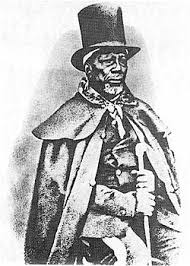

Basotho are unique people with their own special unique cultural aspects. Basotho are situated in a small kingdom in the sky called Lesotho in the African continant, inside South Africa. Like every country, Lesotho has its own traditions that separates it from all the many counties/tribes in Africa and across the world. This website is intended to showcase most of the many traditions/cultures The Basotho People have.
